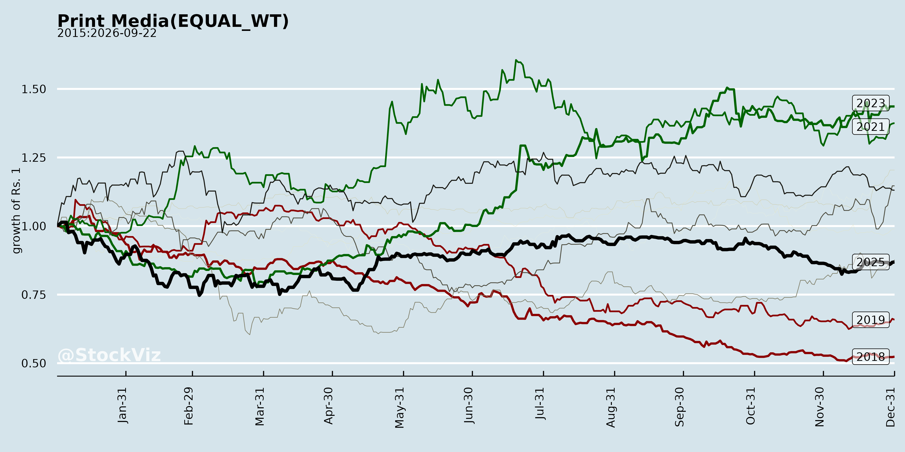
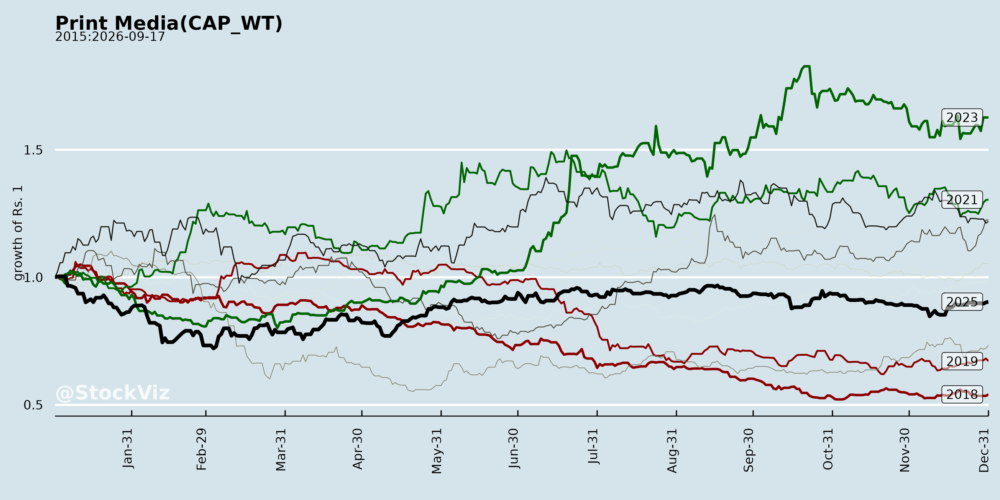
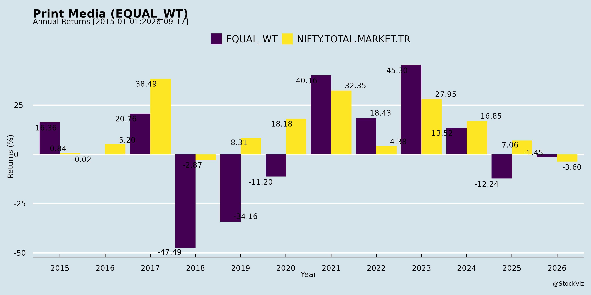
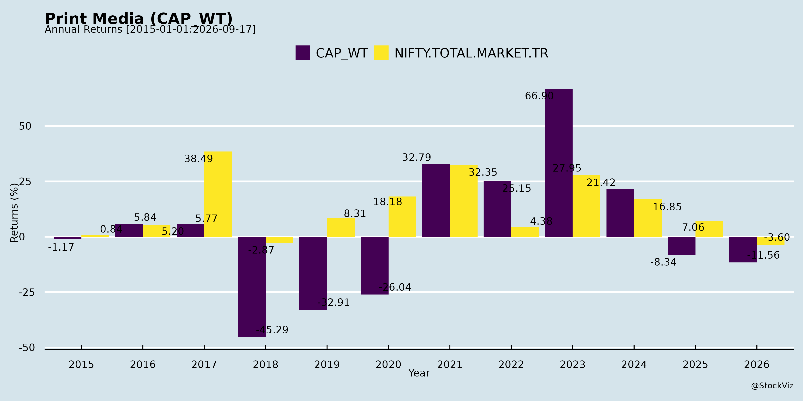
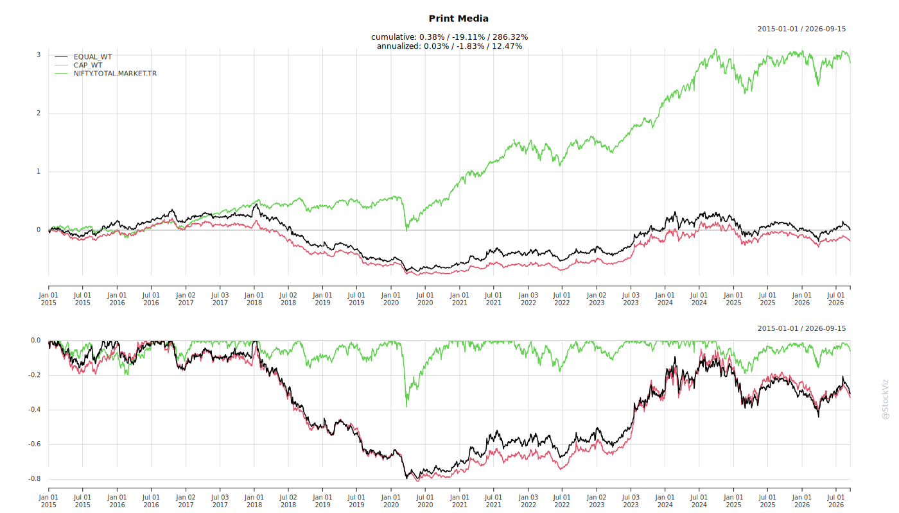
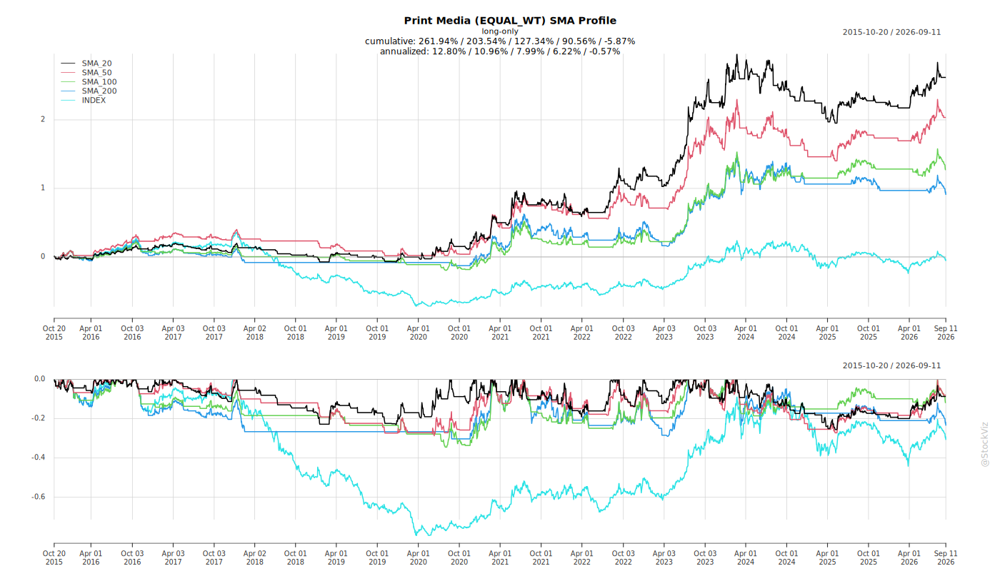
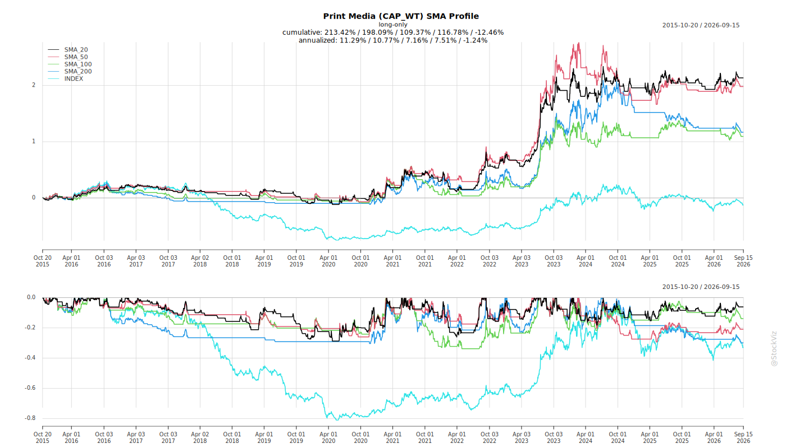
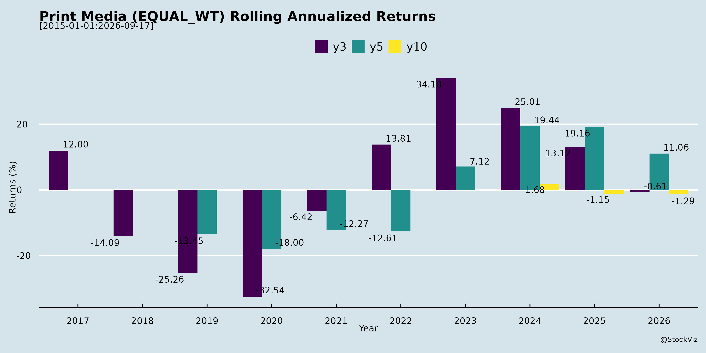
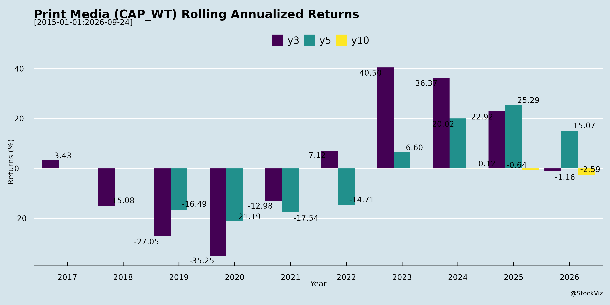

asof: 2025-11-27
Indian Print Media Sector Analysis: Headwinds, Tailwinds, Growth Prospects, and Key Risks
Based on Q2 FY26 earnings transcripts from D B Corp Ltd (Dainik Bhaskar group) and HT Media Group (Hindustan Times / Hindustan Media Ventures Ltd)—key players in Hindi/English print—the sector shows resilient performance with 9-10% ad revenue growth YoY (driven by print), steady circulation, and cost tailwinds from soft newsprint. However, growth is uneven (H1 muted at ~2% revenue), with digital/radio drags. Below is a structured summary.
Tailwinds (Supportive Factors)
Headwinds (Challenges)
Growth Prospects
Key Risks
| Risk Category | Details | Mitigation/Impact |
|---|---|---|
| Ad Cyclicality | Post-festive slowdown; election code-of-conduct (Bihar Q3 drag); govt/FMCG prolonged weakness (20-25% share). | Diversify categories; LFL focus. High. |
| Input Cost Volatility | Newsprint rupee-price rise (currency fluctuations); DB expects range-bound but forex losses hit H1 PAT. | Inventory buffers; domestic sourcing. Medium. |
| Receivables | Govt dues 30% >6 months (up to 2 yrs; DB representation to INS/courts). | Policy advocacy. Medium (cash flow drag). |
| Circulation/Competition | Tier-2/3 stagnation despite efforts (DB: Bihar/JK/MH lag); metro pullouts (e.g., Mumbai Mirror). Digital shift erodes youth readers. | Ground schemes, City Bhaskar/DB Star. Medium. |
| Digital/Radio Execution | OTT losses persist (HT scaling risks); radio impairments/recovery uncertain. | CAC trends, station ops (DB Q4). High LT. |
| Macro/Regulatory | Slowdown in real estate (stamp duty lag); MF absence (HT: legacy media bias). Radio mandates delayed. | Engagement; no guidance given. Low-Medium. |
Overall Summary: Indian print media delivered decent Q2 (9-10% ad growth, EBITDA margins ~10-25%) amid tailwinds from costs/macros, but H1 muted (~2% revenue) highlights uneven recovery. Print remains core (70-80% revenue) with tailwinds outweighing headwinds short-term, but diversification critical (digital/radio <20% but growing). Prospects bright for H2 FY26 (festives ~12-13% growth), targeting mid-single digit industry growth; risks center on ad volatility/govt dependency. Sector resilient but needs circulation/digital monetization for sustained 10%+ CAGR.
asof: 2025-11-27
Summary Analysis of Indian Print Media Sector (Based on Provided Documents)
The documents cover key players like Hindustan Media Ventures Ltd (HMVL), HT Media Ltd, Jagran Prakashan Ltd (JPL), and The Sandesh Ltd, providing insights into compliance updates, clarifications, Q2/H1 FY26 results, and investor presentations (primarily JPL’s detailed deck). The sector shows resilience amid digital shifts, with print holding steady via ad growth but facing circulation softness. Below is a structured analysis of headwinds, tailwinds, growth prospects, and key risks.
Headwinds (Challenges)
Tailwinds (Positive Supports)
| Key Metric (JPL Consolidated Q2FY26) | YoY Change |
|---|---|
| Operating Revenue | +5% |
| Print Ads | +14% |
| OOH/Events Revenue | +16% |
| PAT | +37% |
Growth Prospects
Key Risks
Overall Sector Verdict: Moderately Positive. Print media resilient (ad-led growth, cash-rich), pivoting to digital/OOH/radio for 5-8% CAGR prospects. Headwinds concentrated in circulation/digital profitability, but tailwinds from diversification and efficiencies outweigh. Monitor ad cycles and digital monetization for upside. JPL emerges strongest; Sandesh investment-heavy.
asof: 2025-11-27
Indian Print Media Sector Analysis (Based on Q2 FY26 Earnings Transcripts: D B Corp, HT Media/HMVL)
The analysis draws from Q2 FY26 (ended Sep 30, 2025) performance of key players: D B Corp Ltd (Dainik Bhaskar, dominant Hindi print/radio/digital), HT Media/HMVL (Hindustan Times/Mint English-Hindi print, Fever FM radio, OTTplay digital). Sector shows resilient print recovery amid soft input costs and macro tailwinds, but faces digital/radio investment drags and ad mix volatility. Overall: Print ad growth 10-12% YoY, EBITDA margins expanding (9-25%), but H1 growth modest (2-4% revenue).
Tailwinds (Positive Drivers)
Headwinds (Challenges)
Growth Prospects
| Metric | DB Corp (Q2 YoY) | HT Media (Q2 YoY) |
|---|---|---|
| Ad Revenue | +12% | +10% (Print) |
| Total Revenue | +9% | +4% (Consol) |
| EBITDA | +10% | +33% (9% margin) |
| PAT | +13% | Break-even |
Key Risks
Summary Verdict: Moderate Recovery with Cautious Optimism. Print anchors stability (tailwind-dominant), but radio/digital drag profitability. Prospects hinge on festive sustainment, digital inflection, and ad diversification. Risks tilted to cyclical ads/inputs; expect 5-10% FY26 revenue growth, margins 20-25% if newsprint holds. Sector undervalued (low MF interest), but execution key for re-rating.
asof: 2025-11-27
Analysis of Jagran Prakashan Limited (JPL) in the Context of Indian Print Media
Jagran Prakashan Limited (JPL), a leading player in Indian print media with flagship brands like Dainik Jagran, provides insights into sector dynamics through its Q2FY26 (quarter ended Sep 30, 2025) and H1FY26 results. The analysis below draws directly from the provided press release, highlighting tailwinds (supportive factors), headwinds (challenges), growth prospects, and key risks for JPL and the broader Indian print media sector (characterized by regional language dominance, ad revenue reliance, and digital disruption).
Tailwinds (Positive Drivers)
Headwinds (Challenges)
Growth Prospects
Key Risks
| Risk Category | Description | Evidence from Results |
|---|---|---|
| Ad Market Volatility | Heavy reliance on ads (60-70% revenues); slowdown hits consolidated growth. | Ad growth halved consolidated (4.7-4.8% vs standalone 12%). |
| Digital Disruption | Circulation decline + digital losses erode print dominance. | Flat digital revenue amid losses (-13% margin); competition from GAFA platforms. |
| Radio Weakness | Regulatory/competitive pressures (e.g., FM auctions, OTT audio). | 31% revenue drop; deepening losses (-₹7 Cr PAT Q2). |
| Segment Imbalance | Over-dependence on Dainik Jagran (64% Q2 revenue); others volatile. | Other pubs/radio/digital drag margins. |
| Macro/Operational | Newsprint costs, inflation, or policy changes (e.g., FDI in print). | Flat op. profit despite revenue growth; forward-looking risks noted in safe harbor. |
| Execution | Scaling loss-making units (digital/radio) without capex dilution. | H1 other income spike (87%) non-recurring (Keyman policy). |
Summary
JPL’s Q2FY26 results highlight a tale of two halves in Indian print media: strong tailwinds in core Hindi print ads and profitability (standalone +10% revenue, +30-45% PAT) buoyed by Dainik Jagran’s resilience, but headwinds from circulation stagnation, radio collapse (-31% revenue), and digital losses cap consolidated growth at ~4%. Growth prospects lie in print ad recovery, outdoor/events expansion, and digital traffic monetization, potentially yielding mid-single-digit sector growth. Key risks center on ad cyclicality, segment losses, and digital shift, warranting focus on cost discipline and diversification. Overall, JPL outperforms peers via brand moat but mirrors sector challenges—print’s maturity demands hybrid (print+digital) pivots for sustained EPS growth (up 30-50% YoY). Investors should monitor Q3 ads and radio revival.
Copyright © 2023 SAS Data Analytics Pvt. Ltd. All rights reserved.